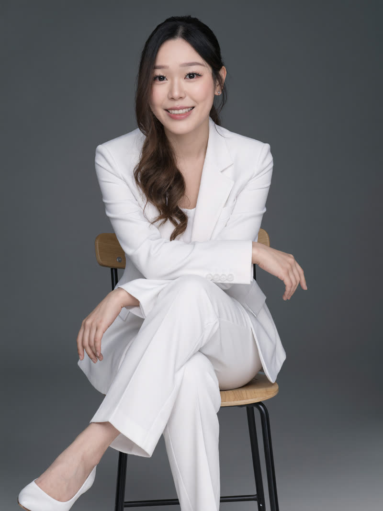
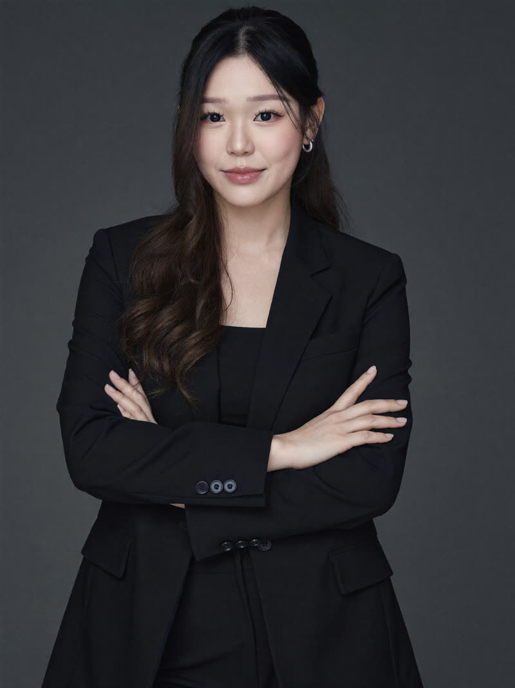
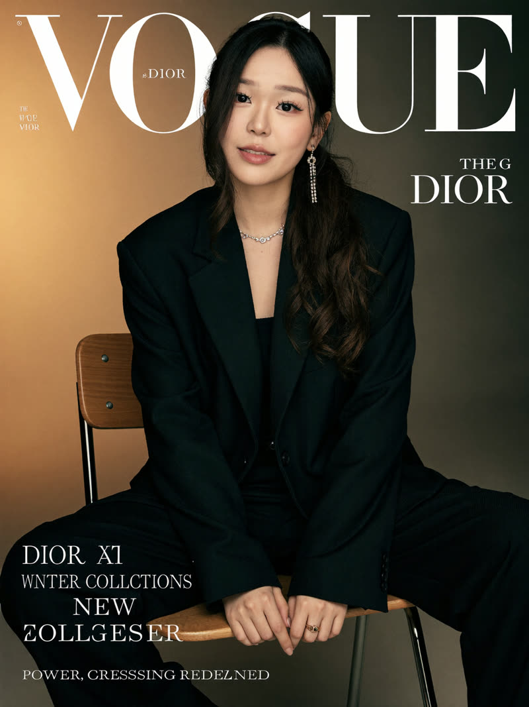
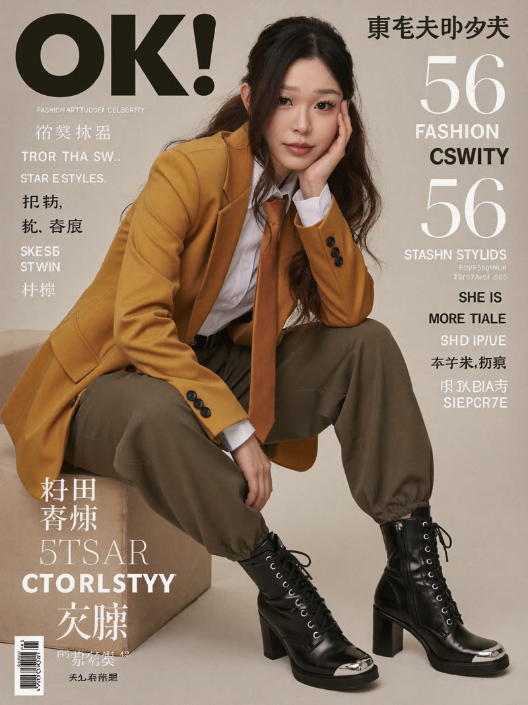
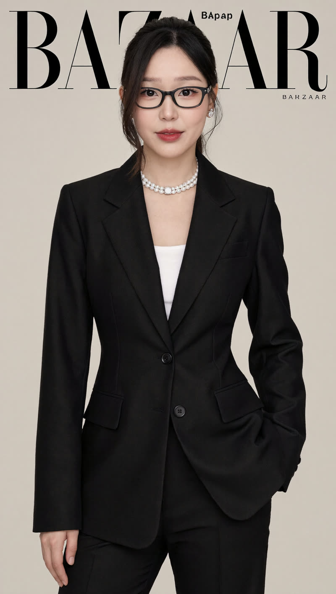
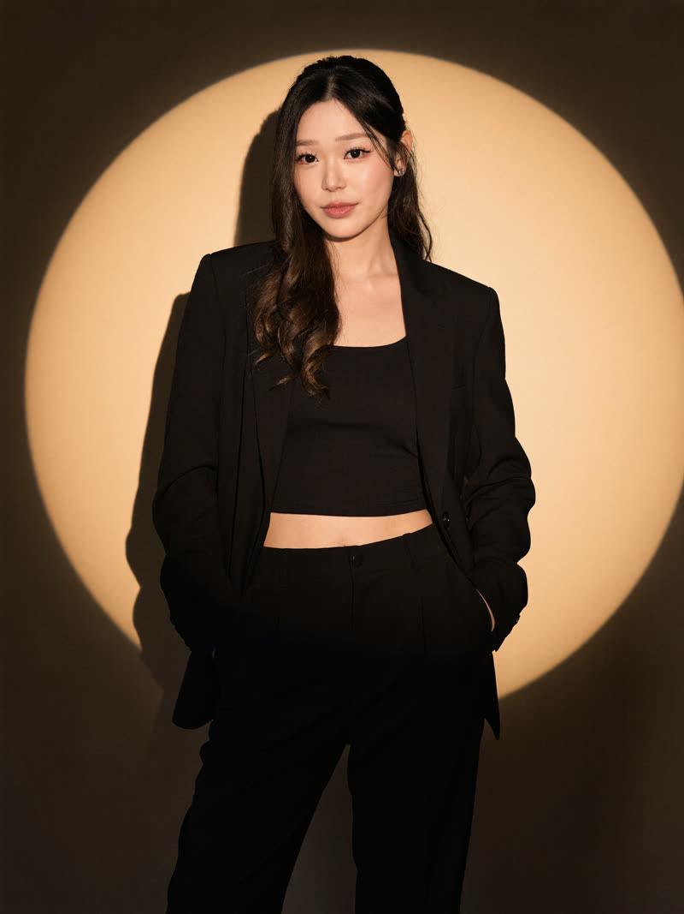
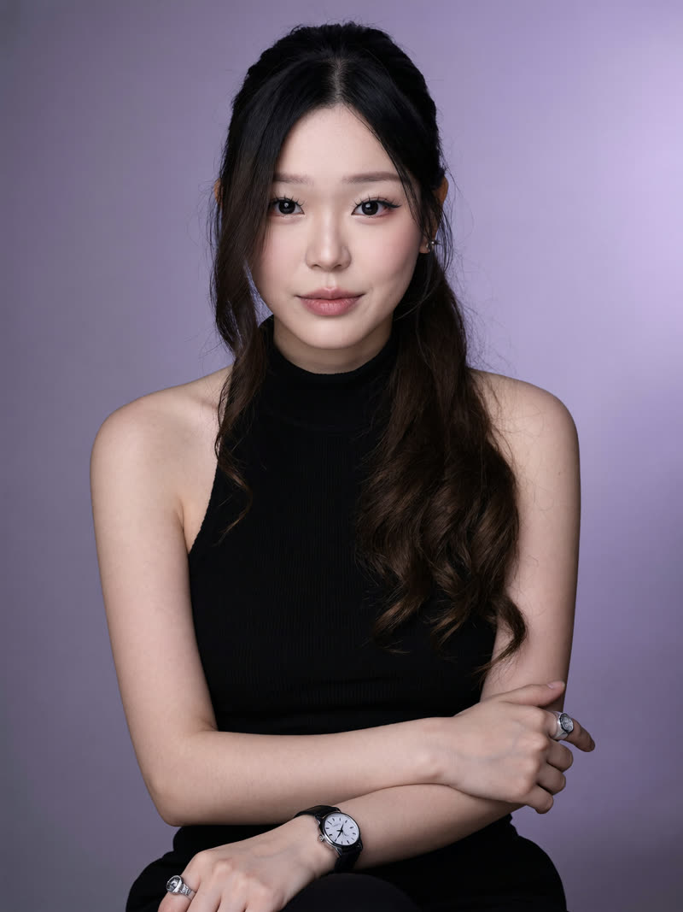
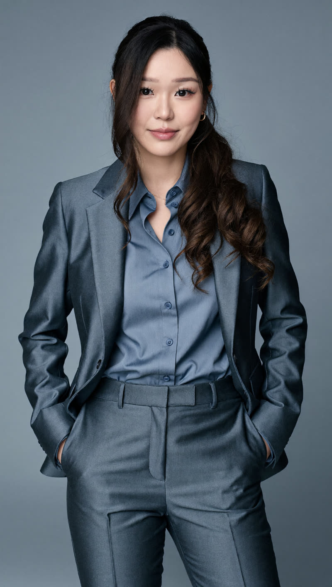
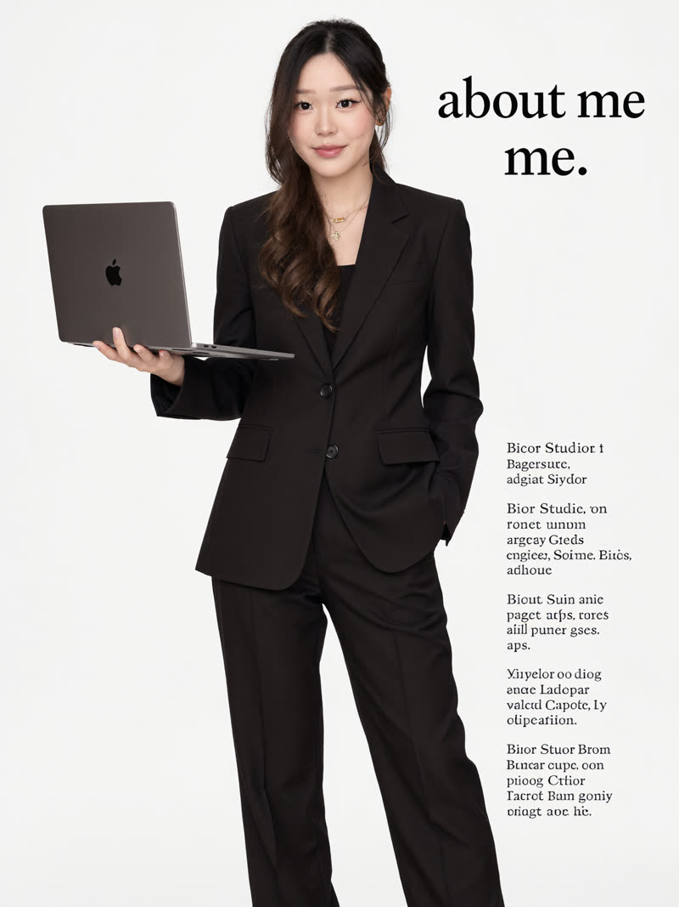

Ten different professional looks: clean studio headshots, magazine-cover energy, and personal-brand shots, all genuinely you. Soul 2.0 locks your real face from your own photos, so nothing reads as a filter or a stranger. Here is the actual set these prompts produce:



Every image in this guide is me, generated from a folder of my own photos. No camera, no studio, no photographer.
https://mcp.higgsfield.ai/mcp, then Connect and approve the sign-in with that same accountSo Claude can see your pictures, use Claude Code and start a new chat in the folder where your photos live (put 10 to 20 clear photos of yourself in one folder, say a folder called me). A few clean, front-on photos help the most.
Ask Claude to build your character with Higgsfield's Soul 2.0, pointed at that folder:
Using the Higgsfield MCP, create a Soul 2.0 character of me from the photos in this folder [point to your folder]. Keep it photoreal and true to my face.Once it's ready, run any prompt below and add "using my character". Ask for 4 variations at a time and keep the ones you love.
Three safe-but-striking looks for your actual LinkedIn profile. Left to right below: the white pantsuit, the black suit, the ivory silk.
A studio headshot of me seated on a simple wooden chair with my legs crossed, wearing a pristine white tailored pantsuit with a blazer and glossy pointed heels. Solid matte dark grey backdrop, soft even studio lighting with gentle shadows, hair parted to one side and falling smoothly over my shoulders. Broad relaxed smile and open posture, polished and optimistic corporate mood. Keep my face true to my reference photos.A straight-on business portrait of me standing against a medium dark grey seamless backdrop with my arms crossed, wearing a structured matte black suit jacket over a dark silk blouse. Small silver hoop earrings, hair parted centre and worn down. Soft directional studio light with gentle shadows under the jaw, neutral black and grey palette, calm, formal and self-assured. Keep my face true to my reference photos.A medium shot of me standing with both hands in my pockets against a smooth neutral grey studio backdrop, wearing a loose glossy ivory silk blouse, partly unbuttoned at the collar, tucked into high-waisted matte black tailored trousers with sharp creases. Soft frontal lighting, minimal monochrome palette, relaxed confident posture, fresh and professional. Keep my face true to my reference photos.These three render you as a full editorial cover, headlines and all. Left to right: the mustard editorial, the power-suit cover, the pearls and glasses cover.


A fashion magazine cover of me, seated and leaning forward with one hand supporting my face, gazing straight into the camera. Mustard yellow blazer over a white shirt with a pale orange tie, loose olive grey trousers with gathered cuffs, chunky black lace-up boots. Warm beige studio background, soft even light, a bold magazine masthead and black and white cover lines layered over the image. Chic, aspirational editorial mood. Keep my face true to my reference photos.A magazine cover of me seated on a wooden and metal chair in a beige studio, wearing an oversized structured black blazer and matching wide-leg trousers, one long jewelled earring, glossy hair over one shoulder. Relaxed confident pose, one arm hanging loosely, head gently tilted, eyes to camera. Soft golden light from the left with a warm gradient background, bold white magazine masthead and cover lines layered over the image. Polished, self-assured, cinematic. Keep my face true to my reference photos.A fashion cover portrait of me standing on a minimalist beige background in a sharply tailored matte black suit with peak lapels and a white blouse at the neckline. Hair pulled back neatly, black rectangular glasses, a double strand pearl necklace, stud earrings and a bold red lip. Soft diffused lighting, muted black, white and beige palette, a stylised magazine masthead behind my head. Empowered and serene. Keep my face true to my reference photos.Higher drama, same professionalism. Left to right: the golden spotlight, the lavender studio, the steel blue.



An editorial shot of me standing relaxed against a plain beige wall inside a dramatic circular golden spotlight, my face and upper body lit warm while the lower half falls into shadow, a sharp silhouette shadow cast on the wall beside me. Loose black suit jacket, black crop top and black high-waisted trousers, long straight hair. Warm amber, beige and black palette, chic and introspective. Keep my face true to my reference photos.A chest-height studio portrait of me seated against a softly lit lavender gradient backdrop, wearing a black sleeveless ribbed turtleneck with my arms gently crossed, a prominent watch on one wrist and a chunky ring. Long straight hair behind my shoulders, subtle natural makeup, soft frontal light, shallow depth of field, calm and poised. Keep my face true to my reference photos.An eye-level portrait of me standing with hands in my pockets, wearing a steel blue wool suit with tailored trousers and a lighter blue silky button-up blouse, long waves over one shoulder, small hoop earrings. Monochromatic blue grey backdrop that matches the outfit, soft diffuse studio light, shallow depth of field. Confident, modern, coolly professional. Keep my face true to my reference photos.The tenth one is for your personal site or portfolio: a full editorial page layout with you in it.

A full-body editorial photo of me for a personal website, standing against a pure white studio backdrop in a sleek oversized black suit with strong shoulders and loose trousers, delicate layered gold necklaces, my right hand outstretched balancing an open laptop on my palm. Large bold black serif text reading "about me." beside me with a small block of intro text. Even diffuse lighting, crisp black and white minimalist look. Keep my face true to my reference photos.📸 Higgsfield (100 free credits): higgsfield.ai (the MCP connect URL is https://mcp.higgsfield.ai/mcp)
🤖 Claude: claude.com (connect Higgsfield under Customize, then Connectors)
Build AI systems with me through recorded lessons you can follow at your own pace. Join the waitlist for first access and the founding price.